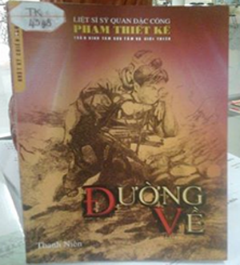

Kỷ niệm 70 năm ngày thành lập Quân đội nhân dân Việt Nam 22-12-1944 đến 22-12-2014

Lần cập nhật cuối lúc Thứ sáu, 19 Tháng 12 2014 10:22 Viết bởi Administrator Thứ sáu, 19 Tháng 12 2014 09:27
HƯỚNG ĐẾN KỶ NIỆM 70 NĂM NGÀY THÀNH LẬP QUÂN ĐỘI NHÂN DÂN VIỆT NAM 22.12.1944 - 22.12.2014. Nhật ký "Đường về" của Phạm Thiết Kế

Trên khắp mọi nẻo đường của Tổ quốc, những con đường được giành giật từ trong máu lửa chiến tranh, đều còn in dấu chân của những người chiến sĩ. Họ hít thở bầu không khí hào hùng của thời đại và ra đi trên con đường của lí tưởng cao cả, với một trái tim tràn đầy nhiệt huyết. Chính nhờ những con người anh hùng ấy mà đất nước qua bao thăng trầm đã viết nên những trang vàng lịch sử. Họ để lại sau lưng giếng nước gốc đa, đi xẻ dọc Trường Sơn chiến đấu trong thầm lặng và hi sinh trong lặng thầm .
Đã có không biết bao nhiêu trang viết cảm động về người lính, nhưng có lẽ cuốn hút bạn đọc nhất vẫn là những dòng nhật kí. Bởi lẽ đó là nhân chứng sinh động , được tắm trong bầu khí quyển chân thực của hoàn cảnh được viết nên bởi mồ hôi và thậm chí cả máu của người chiến sĩ.
Kính thưa quý thầy cô, cùng tất cả các bạn học sinh thân mến!
Thư viện trường THPT chuyên Nguyễn Bỉnh Khiêm trân trọng giới thiệu cuốn sách “Đường Về”.Đây là tập nhật kí chiến tranh của liệt sĩ, sĩ quan đặc công Phạm Thiết Kế, do Trần Bình Tám sưu tầm và giới thiệu .
Phạm Thiết Kế sinh tại Hòa Vang, Quảng Nam anh đã vào bộ đội năm 1953 và tập kết ra Bắc năm 1954, năm 1963 anh tốt nghiệp trường Sỹ Quan Lục Quân với quân hàm thiếu úy. Anh xây dựng gia đình tại Hà Nội , và đến ngày 29/08/1967 anh tạm biệt gia đình vào Nam chiến đấu. Đây cũng là năm tháng anh đặt bút ghi những dòng nhật ký mang tên “Đường Về”. Khi viết lời giới thiệu cho cuốn sách, phó GS-TS Đào Duy Quát viết “ đọc nhật kí “Đường Về” , chúng ta được cùng Phạm Thiết Kế sống và cảm nhận tư tưởng, tình cảm và những hành động anh hùng của một đơn vị đặc công quân đội trên chặng đường hành quân chiến đấu từ miền Bắc XHCN vượt qua dải Trường Sơn đến chiến trường Tây Nguyên”.
Tiếp nối “Nhật kí Đặng Thùy Trâm “ và “Mãi Mãi Tuổi Hai Mươi”, nhật kí “ Đường Về”đã tái hiện một góc nhìn về cả một thế hệ đã hi sinh tuổi xuân của mình mang trái tim nóng bỏng tình yêu Tổ quốc, quê hương, gia đình.
Gần 200 trang viết trong “ Đường Về” là sự tái hiện sinh động 843 ngày đêm hành quân chiến đấu của Phạm Thiết Kế cùng đồng đội. Nội dung cuốn nhật kí gồm hai phần: Hành quân và xuất kích. Phần một “Hành quân” viết về những tháng ngày gian khổ băng rừng, leo dốc, vượt suối, nắng cháy da, mưa buốt thịt, đối mặt với vắt rừng, sốt rét... khó khăn là vậy nhưng thấm đẫm trong từng câu chữ vẫn là giọng điệu phấn khởi hướng về miền Nam ruột thịt, thể hiện trách nhiệm niềm tự hào và niềm tin vào lý tưởng của người lính.
Phần hai “Xuất kích” lại nói về những đêm nung nấu căm hờn, vượt rào độc phá vào căn cứ kẻ thù mà có lúc phải đi giữa những làn đạn đỏ lừ. Người chiến sĩ đứng giữa ranh giới mong manh của sự sống và cái chết. Nhưng Phạm Thiết Kế viết về cái chết thật bình dị và điềm tĩnh làm sao! Bởi nỗi nhớ khôn nguôi về quê hương, gia đình đã trở thành động lực để người lính đi hết cuộc trường chinh đẫm máu và khi suy tư đọng lại là khi chiến trường tạm ngưng tiếng súng , xung quanh là kẻ thù , đằng sau anh không xa là anh em, đồng chí mà anh không biết ai còn ai mất.
“Ta sẽ đi mãi, đi mãi, cho đến ngày chủ nghĩa Cộng sản thành công trên Tổ quốc Việt Nam tươi đẹp” đó là lời thề son sắc khắc ghi trên suốt chặng đường chiến đấu của người chiến sĩ đặc công Phạm Thiết Kế. Chính ý nghĩa đó đã làm anh trở thành“ cây Lim giữa rừng Trường Sơn” bất khuất, kiên cường. Phạm Thiết Kế đôi lúc thể hiện“chất lính” dí dõm, hài hước đôi lúc vô cùng tài hoa trong vai trò chiến sĩ thi sĩ”. Phạm Thiết Kế hy sinh ở chiến trường Tây Nguyên năm 1970 bút tích cuối cùng của cuốn nhật kí là vào ngày 22/12/1969, anh đã ý thức được sự ra đi của mình vẫn với ý chí kiên cường và niềm tin toàn thắng . Cho nên đối với anh đó không phải là ra đi mãi mãi mà đó là sự trở về, là “Đường Về” với Tổ quốc của cả một thế hệ. Có lẽ, sẽ không có mặt anh và những chiến sĩ như anh vào ngày đất nước ca lên khúc ca khải hoàn, ngày mà thế hệ các anh đã đổ máu xương để giành lại. Nhưng chắc hẳn lý tưởng mãnh liệt và cao cả của họ vẫn sẽ còn mãi trên từng bước đi của dân tộc.
Kính thưa quý thầy cô giáo cùng tất cả các bạn học sinh thân mến! Thư viện trường mong được sự quan tâm, theo dõi của toàn thể thầy cô và các bạn học sinh dành cho cuốn nhật kí “ Đường Về” của liệt sĩ Phạm Thiết Kế, hãy đọc và cảm nhận để những ai đã từng đi qua chiến tranh được sống lại những tháng năm hào hùng oanh liệt, để những ai may mắn được sinh ra trong thời bình biết quý trọng hơn cuộc sống hôm nay , “Cuộc sống được giành giật từ trong máu lửa”. Mong rằng những trải nghiệm qua cuốn nhật kí là động lực tinh thần mạnh mẽ thôi thúc mỗi người tu dưỡng và kế thừa khát vọng lí tưởng của thế hệ cha anh. Thư viện hân hạnh được phục vụ các Thầy cô và các bạn, cuốn sách mang mã số : 4348-4352 !
Xin trân trọng kính chào!
- 05/11/2015 10:41 - Kế hoạch và thể lệ hội thi giới thiệu sách năm học…
- 16/11/2014 21:39 - Giới thiệu sách mới Kỷ niệm 32 năm ngày Nhà giáo V…
- 23/10/2014 08:07 - Tiếng sóng bủa ghềnh - Hồi ức của Ngô Thị Huệ
- 17/09/2014 08:12 - Danh mục sách mới năm học 2013 - 2014